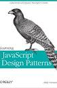

Libros

Ingeniero de software irlandés y líder que actualmente trabaja en el navegador web Google Chrome. Ha trabajado en Google durante más de doce años, centrado en hacer que la web sea más rápida y mejor para los usuarios y desarrolladores web. Anteriormente trabajó en AOL y en sitios de Fortune 500. Addy es autor de varios libros, entre ellos Learning JavaScript Design Patterns, Learning Patterns, Stoic Mind y Image Optimization.